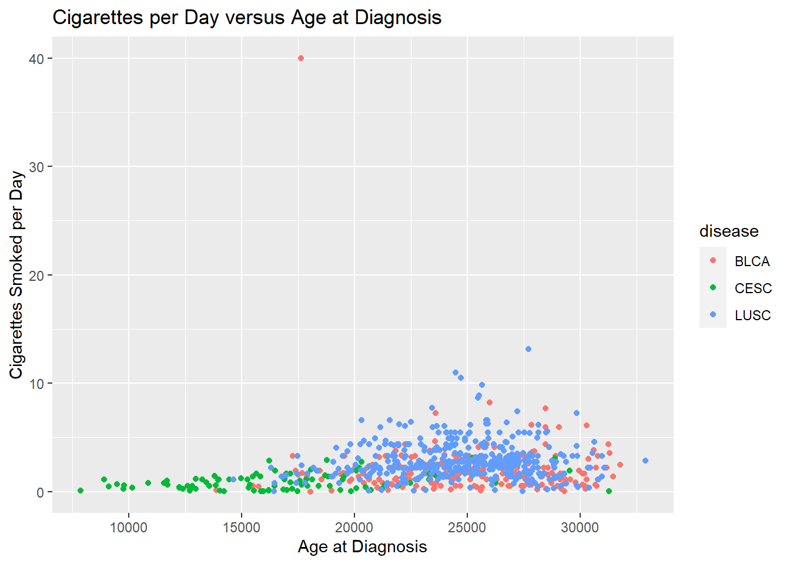
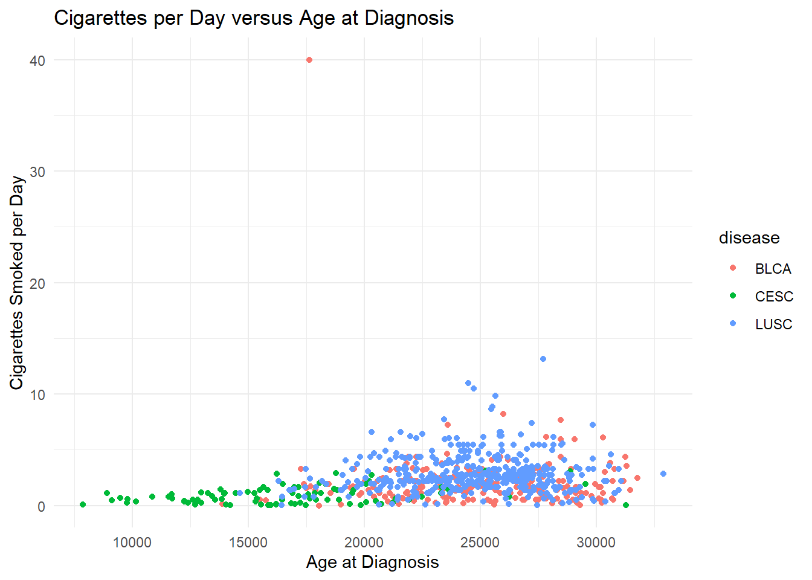
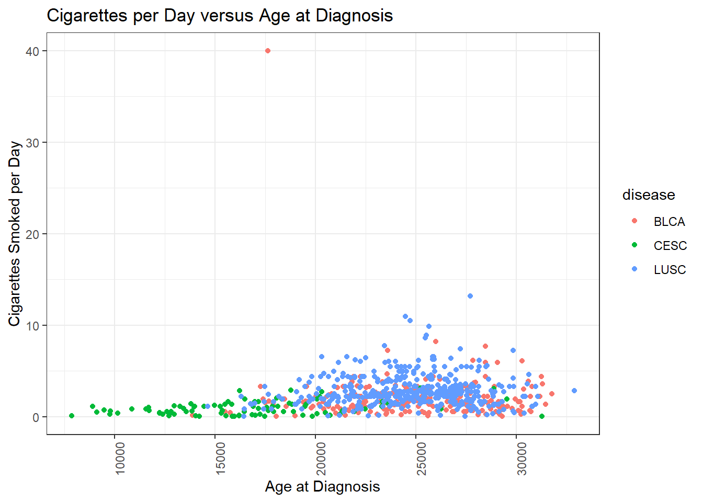
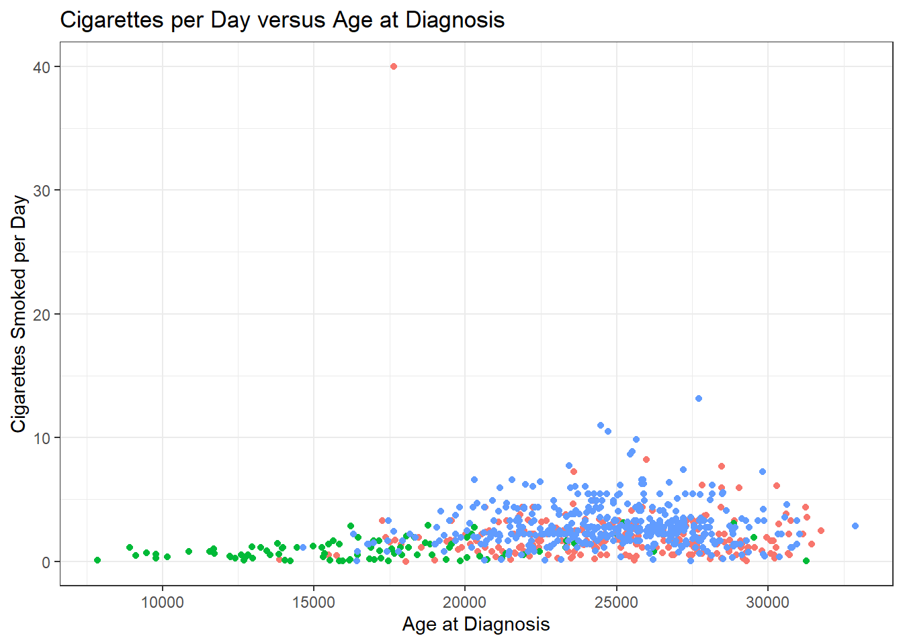
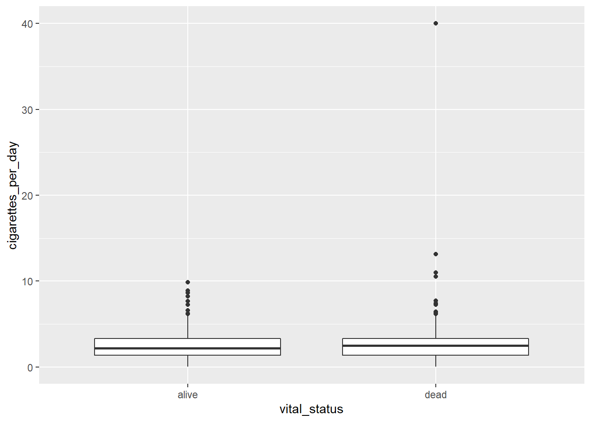
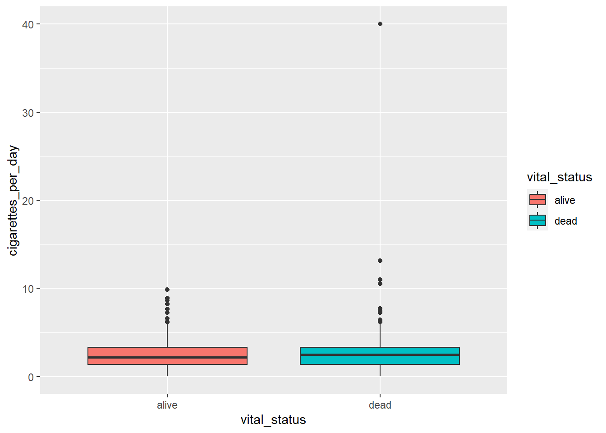
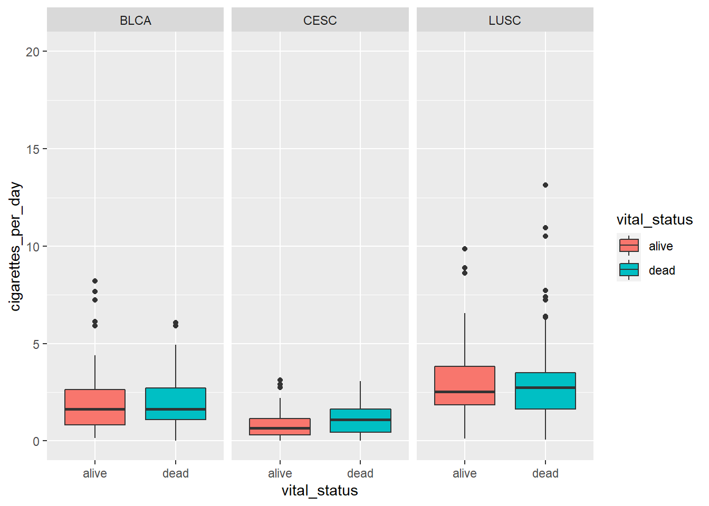
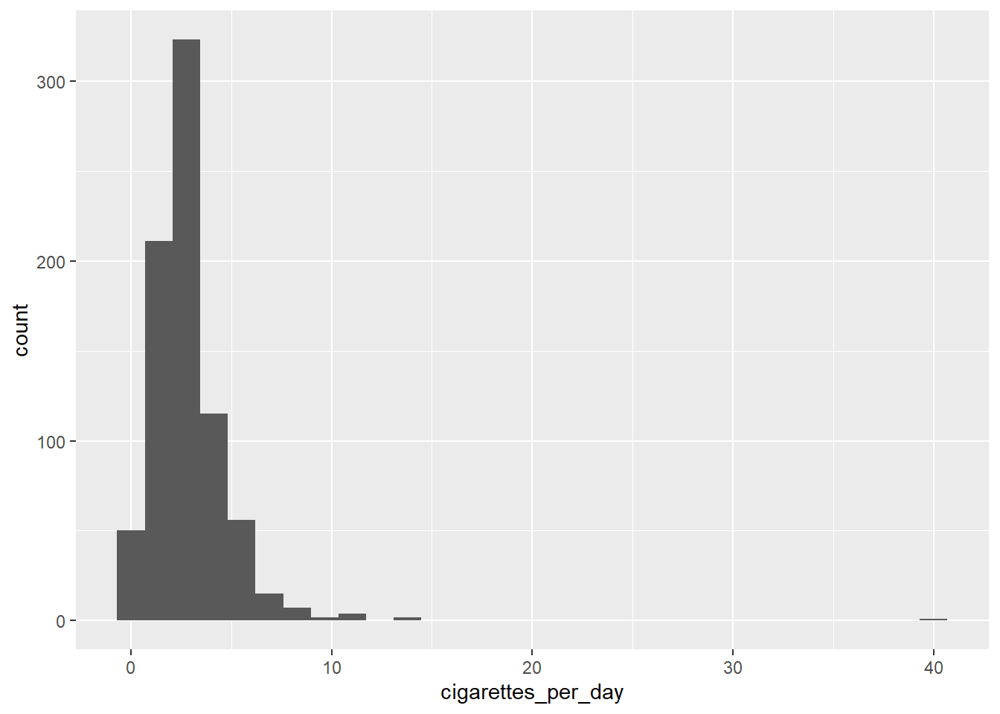

Chapter 4 Ready for R Part 3: Data Visualization and Data Manipulation
4.1 Learning Objectives
- Create and modify scatterplots and boxplots
- Split figures into multiple panels using
facet_wrap() - Customize your plots using built in
theme()s - Sort by a variable in a dataset using
arrange() - Select variables in a dataset using
select() - Filter a dataset using the
filter()function
4.2 Getting set up
# load library
library(tidyverse)
library(readxl)
library(here)
smoke_complete <- read_excel(here("data/smoke_complete.xlsx"),
sheet=1,
na="NA")
#remove some columns - we'll talk about this later
smoke_complete <- smoke_complete %>%
select(age_at_diagnosis, tumor_stage,
cigarettes_per_day, gender,
vital_status, disease)4.3 More about ggplot2
4.3.1 Customizing a Scatterplot
Now that we have the data generally displayed the way we’d like, we can start to customize a plot.
our_plot <- ggplot(smoke_complete) +
aes(x = age_at_diagnosis,
y = cigarettes_per_day,
color = disease) +
geom_point() +
labs(title = "Cigarettes per Day versus Age at Diagnosis",
x = "Age at Diagnosis",
y = "Cigarettes Smoked per Day")
our_plot
4.3.2 Changing visual properties using built in themes

A complete list of pre-set themes is available here, and we’ll cover ways to customize our own themes later in this lesson.
4.3.3 Using theme() to customize
Adding the theme() function will let us customize our plot further.
There are a few arguments that are really helpful to modify:
axis.titleaxis.title.xaxis.title.y- (The labels for the axes)
legend.position(Placing the legend, including removing it)


4.3.4 Saving your work
After you’re satisfied with a plot, it’s likely you’d want to share it with other people or include in a manuscript or report.
This automatically saves the last plot for which code was executed. This command interprets the file format for export using the file suffix you specify. The other arguments dictate the size (width and height) and resolution (dpi).
4.4 Brief Aside: Categorical Data (factors)
One data type that we haven’t yet looked at are factors - factors are how R represents categorical data.
For the most part, you can use character and factors interchangably for categorical data.
However, there is one main difference. factors define the permissible values in a vector with an argument called levels. They also define the order in which these values are displayed.
## character_vector
## Cat Dog Mouse
## 1 2 1You can make a character vector into a factor vector by using the factor() function, and supplying an argument called levels.
4.4.1 Levels of a Factor
The levels of a factor are the permissible values in a factor. The order of the values in a factor also control the order in which the values appear in tables and on the axes in a plot.
So, you can control the order of the categories in a factor by specifying the order of the categories in the levels argument.
## factor_vector
## Dog Cat Mouse
## 2 1 1This ordering is the main reason to use factors. We will revisit this again in Part 4 when we learn how to manipulate the data type of a variable in a data.frame.
4.5 Back to ggplot2: Boxplots
Boxplots compare the distribution of a quantitative variable among categories.
Remember, vital_status is a character vector, but we’re not too worried about the implicit order of the categories, so we can use it as is in our boxplot.
# creating a boxplot
ggplot(smoke_complete) +
aes(x = vital_status, y = cigarettes_per_day) +
geom_boxplot()
The main differences from the scatterplots we created earlier are the geom type and the variables plotted.
We can change the color similarly to scatterplots. However, we map to fill and not color:
# adding color
ggplot(smoke_complete) +
aes(x = vital_status,
y = cigarettes_per_day,
fill = vital_status) +
geom_boxplot()
4.5.1 Faceting our boxplot
One of the most powerful ways to change a visualization is by faceting. We can make multiple plots using another categorical variable.
To do this, we have to add the facet_wrap() command to our plot. We need to specify the variable to facet_wrap - disease by using the vars() function to specify it as a variable.
# adding color
ggplot(smoke_complete) +
aes(x = vital_status,
y = cigarettes_per_day,
fill = vital_status) +
geom_boxplot() +
ylim(c(0,20)) +
facet_wrap(vars(disease))## Warning: Removed 1 rows containing non-finite values (stat_boxplot).
Don’t forget to look at the help documentation (e.g., ?facet_wrap) to learn more about additional ways to customize your plots!
4.6 Further learning
If you are interested in learning more about ggplot:
- Documentation for all ggplot features is available here.
- RStudio also publishes a ggplot cheat sheet that is really handy!
4.7 Data Manipulation using dplyr
What we have learned is pretty great overall for plotting. But there are a lot of other things we can do with data.frames!
We’re going to talk about another tidyverse package: dplyr. dplyr is your all-purpose toolbox for filtering, summarizing, and transforming data.
The nice thing about dplyr is that it is focused on verbs that do things to your data.
We’ll focus on the following verbs:
arrange()- sorting adata.frameby a variablefilter()- subsetting adata.frameby criteriaselect()- returning only a few columns from ourdata.framegroup_by()/summarize()- summarizing our data.frame, such as counting and computing meansmutate()- transforming variables in our data%>%- the pipe character, which lets us join our verbs together in a pipeline.
4.7.1 Introducing the pipe (%>%)
Often times, we want to do multiple operations on our data and in a specific order.
For example, I might want to do the following:
Take my dataset smoke_complete and then
Sort it by cigarettes_per_day and then
filter to have only males from the data.
The pipe (%>%) function acts like the and then:
# Take my dataset smoke complete **and then**
smoke_complete %>%
#sort it by cigarettes_per day **and then**
arrange(cigarettes_per_day) %>%
#filter it to only have males
filter(gender == "male")## # A tibble: 786 x 6
## age_at_diagnosis tumor_stage cigarettes_per_day gender vital_status disease
## <dbl> <chr> <dbl> <chr> <chr> <chr>
## 1 18051 stage iii 0.00822 male dead BLCA
## 2 29288 stage iii 0.0548 male dead BLCA
## 3 18983 stage ii 0.0822 male dead BLCA
## 4 22632 stage iiia 0.110 male dead LUSC
## 5 20632 stage iib 0.110 male alive LUSC
## 6 25579 stage iii 0.110 male dead BLCA
## 7 22632 stage iiia 0.110 male dead LUSC
## 8 20632 stage iib 0.110 male alive LUSC
## 9 23156 stage i 0.137 male dead LUSC
## 10 13867 stage ii 0.137 male alive BLCA
## # ... with 776 more rowsYou can think of a pipe as putting the output of one step as an input of another. These two statements are equivalent:
## # A tibble: 1,152 x 6
## age_at_diagnosis tumor_stage cigarettes_per_day gender vital_status disease
## <dbl> <chr> <dbl> <chr> <chr> <chr>
## 1 18051 stage iii 0.00822 male dead BLCA
## 2 19847 not reported 0.0110 female alive CESC
## 3 14225 not reported 0.0219 female dead CESC
## 4 31258 not reported 0.0312 female alive CESC
## 5 16429 stage iii 0.0548 female dead LUSC
## 6 27449 stage ii 0.0548 female dead LUSC
## 7 29288 stage iii 0.0548 male dead BLCA
## 8 15965 not reported 0.0548 female alive CESC
## 9 17465 not reported 0.0548 female dead CESC
## 10 15849 not reported 0.0548 female alive CESC
## # ... with 1,142 more rowsand
## # A tibble: 1,152 x 6
## age_at_diagnosis tumor_stage cigarettes_per_day gender vital_status disease
## <dbl> <chr> <dbl> <chr> <chr> <chr>
## 1 18051 stage iii 0.00822 male dead BLCA
## 2 19847 not reported 0.0110 female alive CESC
## 3 14225 not reported 0.0219 female dead CESC
## 4 31258 not reported 0.0312 female alive CESC
## 5 16429 stage iii 0.0548 female dead LUSC
## 6 27449 stage ii 0.0548 female dead LUSC
## 7 29288 stage iii 0.0548 male dead BLCA
## 8 15965 not reported 0.0548 female alive CESC
## 9 17465 not reported 0.0548 female dead CESC
## 10 15849 not reported 0.0548 female alive CESC
## # ... with 1,142 more rowsOne big advantage of the pipe is that you can build your processing line by line.
In practice, as I work, I will often pipe things into View() to confirm I did things correctly:
4.7.2 The difference between + and %>%
Remember that + is for ggplot2 and that %>% is for dplyr. To keep them distinct and avoid confusion, separate our your data processing and your plotting:
arranged_smokers <- smoke_complete %>%
filter(gender == "male")
ggplot(data=arranged_smokers) +
aes(x = cigarettes_per_day) +
geom_histogram()## `stat_bin()` using `bins = 30`. Pick better value with `binwidth`.
4.7.3 Sorting Data Frames using arrange()
Ok, we already have encountered arrange(). It’s a function that lets us sort a data.frame by a variable.
By default, it sorts in ascending order:
## # A tibble: 1,152 x 6
## age_at_diagnosis tumor_stage cigarettes_per_day gender vital_status disease
## <dbl> <chr> <dbl> <chr> <chr> <chr>
## 1 18051 stage iii 0.00822 male dead BLCA
## 2 19847 not reported 0.0110 female alive CESC
## 3 14225 not reported 0.0219 female dead CESC
## 4 31258 not reported 0.0312 female alive CESC
## 5 16429 stage iii 0.0548 female dead LUSC
## 6 27449 stage ii 0.0548 female dead LUSC
## 7 29288 stage iii 0.0548 male dead BLCA
## 8 15965 not reported 0.0548 female alive CESC
## 9 17465 not reported 0.0548 female dead CESC
## 10 15849 not reported 0.0548 female alive CESC
## # ... with 1,142 more rowsTo sort by descending order, you need to wrap the variable in the desc() function:
## # A tibble: 1,152 x 6
## age_at_diagnosis tumor_stage cigarettes_per_day gender vital_status disease
## <dbl> <chr> <dbl> <chr> <chr> <chr>
## 1 17635 stage iv 40 male dead BLCA
## 2 27708 stage ia 13.2 male dead LUSC
## 3 27708 stage ia 13.2 male dead LUSC
## 4 24477 stage ia 11.0 male dead LUSC
## 5 24477 stage ia 11.0 male dead LUSC
## 6 24713 stage iiia 10.5 male dead LUSC
## 7 24713 stage iiia 10.5 male dead LUSC
## 8 25646 stage ib 9.86 male alive LUSC
## 9 25646 stage ib 9.86 male alive LUSC
## 10 25506 stage ib 8.88 male alive LUSC
## # ... with 1,142 more rowsYou can also arrange by multiple variables.
## # A tibble: 1,152 x 6
## age_at_diagnosis tumor_stage cigarettes_per_day gender vital_status disease
## <dbl> <chr> <dbl> <chr> <chr> <chr>
## 1 17635 stage iv 40 male dead BLCA
## 2 27708 stage ia 13.2 male dead LUSC
## 3 27708 stage ia 13.2 male dead LUSC
## 4 24477 stage ia 11.0 male dead LUSC
## 5 24477 stage ia 11.0 male dead LUSC
## 6 24713 stage iiia 10.5 male dead LUSC
## 7 24713 stage iiia 10.5 male dead LUSC
## 8 25646 stage ib 9.86 male alive LUSC
## 9 25646 stage ib 9.86 male alive LUSC
## 10 25506 stage ib 8.88 male alive LUSC
## # ... with 1,142 more rowsNote that order of variables in arrange() matters!
## # A tibble: 1,152 x 6
## age_at_diagnosis tumor_stage cigarettes_per_day gender vital_status disease
## <dbl> <chr> <dbl> <chr> <chr> <chr>
## 1 25220 not reported 3.12 female alive CESC
## 2 28873 not reported 3.07 female dead CESC
## 3 18773 not reported 2.90 female alive CESC
## 4 16231 not reported 2.85 female dead CESC
## 5 24059 not reported 2.74 female dead CESC
## 6 20302 not reported 2.74 female alive CESC
## 7 28826 not reported 2.47 male dead LUSC
## 8 28826 not reported 2.47 male dead LUSC
## 9 21520 not reported 2.19 female dead CESC
## 10 20207 not reported 2.19 female alive CESC
## # ... with 1,142 more rows4.7.4 filter()ing our data
filter() is an extremely powerful function. It lets us subset our data according to specific criteria.
Let’s filter on a numeric variable, cigarettes_per_day:
## # A tibble: 1,151 x 6
## age_at_diagnosis tumor_stage cigarettes_per_day gender vital_status disease
## <dbl> <chr> <dbl> <chr> <chr> <chr>
## 1 24477 stage ia 11.0 male dead LUSC
## 2 26615 stage ib 2.19 male dead LUSC
## 3 28171 stage ib 1.64 female dead LUSC
## 4 27154 stage ia 1.10 male alive LUSC
## 5 23370 stage iiia 2.74 female alive LUSC
## 6 19025 stage ib 1.37 male dead LUSC
## 7 26938 stage iv 1.37 male dead LUSC
## 8 28430 stage ib 1.64 male dead LUSC
## 9 30435 stage iib 2.19 male dead LUSC
## 10 24019 stage iv 1.37 male dead LUSC
## # ... with 1,141 more rowsWe can also filter on a category. But that does require us to know the values of that categorical variable.
## # A tibble: 91 x 6
## age_at_diagnosis tumor_stage cigarettes_per_day gender vital_status disease
## <dbl> <chr> <dbl> <chr> <chr> <chr>
## 1 26938 stage iv 1.37 male dead LUSC
## 2 24019 stage iv 1.37 male dead LUSC
## 3 24624 stage iv 2.74 male dead LUSC
## 4 27455 stage iv 3.56 male dead LUSC
## 5 25688 stage iv 2.41 male alive LUSC
## 6 25286 stage iv 2.74 male dead LUSC
## 7 23323 stage iv 3.78 male dead BLCA
## 8 24428 stage iv 3.40 male dead BLCA
## 9 22271 stage iv 2.19 male alive BLCA
## 10 23927 stage iv 1.32 male dead BLCA
## # ... with 81 more rows4.7.5 Filtering requires a little logic
We can chain multiple criteria using the & (AND) or | (OR) operators. But we need to review a little logic before we do this.
If I wanted to return patients who were
male and stage iv,
I would want use an & to chain these criteria together:
gender == "male" & tumor_stage == "stage_iv"## # A tibble: 75 x 6
## age_at_diagnosis tumor_stage cigarettes_per_day gender vital_status disease
## <dbl> <chr> <dbl> <chr> <chr> <chr>
## 1 26938 stage iv 1.37 male dead LUSC
## 2 24019 stage iv 1.37 male dead LUSC
## 3 24624 stage iv 2.74 male dead LUSC
## 4 27455 stage iv 3.56 male dead LUSC
## 5 25688 stage iv 2.41 male alive LUSC
## 6 25286 stage iv 2.74 male dead LUSC
## 7 23323 stage iv 3.78 male dead BLCA
## 8 24428 stage iv 3.40 male dead BLCA
## 9 22271 stage iv 2.19 male alive BLCA
## 10 23927 stage iv 1.32 male dead BLCA
## # ... with 65 more rowsIf I wanted patients who were
male or stage iv
I would use an | to chain these criteria together.
## # A tibble: 802 x 6
## age_at_diagnosis tumor_stage cigarettes_per_day gender vital_status disease
## <dbl> <chr> <dbl> <chr> <chr> <chr>
## 1 24477 stage ia 11.0 male dead LUSC
## 2 26615 stage ib 2.19 male dead LUSC
## 3 27154 stage ia 1.10 male alive LUSC
## 4 19025 stage ib 1.37 male dead LUSC
## 5 26938 stage iv 1.37 male dead LUSC
## 6 28430 stage ib 1.64 male dead LUSC
## 7 30435 stage iib 2.19 male dead LUSC
## 8 24019 stage iv 1.37 male dead LUSC
## 9 26813 stage iib 2.74 male alive LUSC
## 10 23972 stage ib 2.19 male alive LUSC
## # ... with 792 more rowsThink about it: which of the above two code blocks will return a larger number of patients?
4.7.6 More about Comparison and Logical Operators
This is a useful reference for all the different operators (both logical and comparison) that you can use: https://www.datamentor.io/r-programming/operator/
4.7.7 Selecting columns using select()
The final verb we’ll look at is select(). It allows us to select variables from our dataset:
## # A tibble: 1,152 x 2
## gender tumor_stage
## <chr> <chr>
## 1 male stage ia
## 2 male stage ib
## 3 female stage ib
## 4 male stage ia
## 5 female stage iiia
## 6 male stage ib
## 7 male stage iv
## 8 male stage ib
## 9 male stage iib
## 10 male stage iv
## # ... with 1,142 more rowsIf we want to select everything but one variable, we can use a - in front of that variable.
## # A tibble: 1,152 x 5
## age_at_diagnosis tumor_stage cigarettes_per_day vital_status disease
## <dbl> <chr> <dbl> <chr> <chr>
## 1 24477 stage ia 11.0 dead LUSC
## 2 26615 stage ib 2.19 dead LUSC
## 3 28171 stage ib 1.64 dead LUSC
## 4 27154 stage ia 1.10 alive LUSC
## 5 23370 stage iiia 2.74 alive LUSC
## 6 19025 stage ib 1.37 dead LUSC
## 7 26938 stage iv 1.37 dead LUSC
## 8 28430 stage ib 1.64 dead LUSC
## 9 30435 stage iib 2.19 dead LUSC
## 10 24019 stage iv 1.37 dead LUSC
## # ... with 1,142 more rows4.7.8 The difference between filter() and select()
One thing to keep in mind is that:
filter() works on rows, and
select() works on columns
Keep that in mind!
4.7.9 Saving our results
Let’s save our processed data in the data/ directory. We’ll save it as a csv file, which is short for comma separated value. This is a file type that can be easily imported into excel.
4.8 What you learned today
- customizing
ggplotsusingtheme() - making boxplots
- faceting plots
- a little bit about factors
- pipes
arrange()filter()select()
4.9 Practice
Try out chapters 2 and 3 in the R-Bootcamp:
https://r-bootcamp.netlify.app/chapter2 https://r-bootcamp.netlify.app/chapter3
4.10 Acknowledgements
This notebook was adapted from material from Kate Hertweck and https://fredhutch.io and from the R-Bootcamp by Ted Laderas and Jessica Minnier.
4.11 Assignment 3
- Load the
smoke_completedataset from thedatafolder. Usefilter()to subset those patients who have
disease == “LUSC”
then save the results to an object called lusc_smokers:
Sort
lusc_smokersby decreasingtumor_stage:For
lusc_smokers, make a boxplot where y = cigarettes_per_day and x = tumor_stage.Modify your plot to facet by
gender:Subset
smoke_completeto a different set of patients, such as gender == “female”.
Make a new faceted plot, this time a scatterplot. You’re free to choose two numeric variables of interest to plot from smoke_complete.
Color your plot by disease and facet by vital_status.